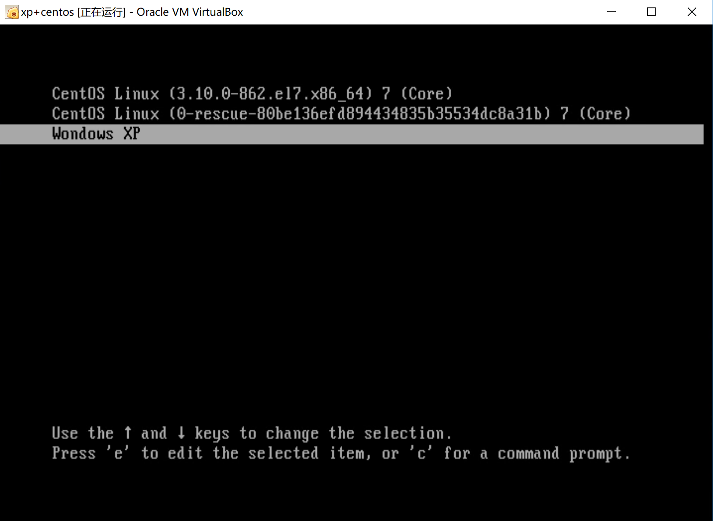

VirtualBox安装 WinXP+CentOS双系统
建议在开始之前，先在这里学习分区和开机的知识，然后按照这个步骤把CentOS单系统安装成功之后，再来看这里。
参考资料
Let’s Go
采用的是先装 CentOS, 再安装Windows的过程，体验一下 “救援” 被Windows覆盖的MBR的过程
下载
XP ISO 安装版，有些版本是所谓 装机版 是不能在Virtual Box跑的，它需要在Windows下打开来运行；我们需要的是ISO映像 这个就可以
CentOS-7 minimal, 官网下载即可
新建虚拟硬盘
这一步很关键
由于XP系统只能识别IDE硬盘，因此在新建系统时如果选择Ubuntu，Win10之类的都会自动分配一个SATA硬盘，这会导致WindowsXP无法识别，从而安装失败。
选择Linux->其他Linux系统则会分配IDE接口的硬盘。另外，直接选择XP系统会导致CentOS中途无法安装，原因暂时不明
还需继续研究
使用CentOS分区并安装CentOS
当然WindowsXP也能进行分区，只不过界面和功能来说还是CentOS更胜一筹；详细的步骤跟着 鸟哥的教程就行了。当然博主的分区规划和鸟哥的略有不同，如下所示：
- 1M ~ 15G : 主要分区1，用于安装CentOS (
sda1) - 15G ~ 30G : 主要分区2，用于安装WindowsXP (
sda2) - 30G ~ 40G : 扩展分区 (
sda3)- 30G ~ 38G ：逻辑分区1，用于windows和cent共享数据 (
sda5)注意到这里从5开始，因为如前所述1~4分给了primary和extended
- 38G ~ 40G : 逻辑分区2，用于换页，增强内存功能 (
sda6)
- 30G ~ 38G ：逻辑分区1，用于windows和cent共享数据 (
安装WindowsXP
重新设置一下启动的ISO镜像，选择WindowsXP镜像启动，然后安装，注意别安装错了（当然如果不小心点了CentOS的系统盘会有提示上面装了系统）
安装完以后，虚拟硬盘的MBR就被WindowsXP的boot loader “霸道”地覆盖了，重启就只能进入WindowsXP系统
救援MBR内的Boot Loader
此时我们需要替换MBR的boot loader，不能再让XP占用下去了！网上很多建议装双系统是先装Windows再装Linux，是因为很多Linux版本自带了一个强大的 boot loader - grub2, 它可以实现多重引导（其实本质上就是引导到某个分区的booting section上而已）
现在在MBR被覆盖的情况下，我们仍然能通过CentOS的安装程序进行“救援”：关机，切换CentOS的ISO镜像，然后按照鸟哥的教程进行救援
Grub2设置
鸟哥的教程里有一部分对Grub2的设置，乍一看还是蛮困扰的，幸亏看了这一片教程，我知道了set root='(hd0,3)'指的是第一块硬盘内的第三个主要分区；而博主的分区规划是把Windows安装在第二个主要分区，因此改成set root='(hd0,2)即可，注意这里格式严格不能有多余空格哦！
成功！
然后重启，就会发现 Grub2 多了一个WindowsXP，截图留念：

当然Windows也启动成功了：
如有任何问题，可发邮件至 ``zys980808@126.com 告知我，感激不尽！
转载请注明来源，欢迎对文章中的引用来源进行考证，欢迎指出任何有错误或不够清晰的表达。可以在下面评论区评论，也可以邮件至 jaytp@qq.com
文章标题:VirtualBox安装 WinXP+CentOS双系统
文章字数:819
本文作者:Jeff
发布时间:2018-11-24, 14:11:22
最后更新:2020-04-21, 09:27:28
原始链接:http://zys980808.github.io/2018/11/24/Linux/VitualBox-Double-System/版权声明: "署名-非商用-相同方式共享 4.0" 转载请保留原文链接及作者。